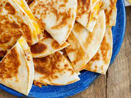

Cheese Quesadilla!

Cheese Quesadillas is very easy to make and prepare. Growing up, it was one of my favorite dishes! Growing up in a Mexican household, the quesadillas we ate were made with corn tortillas rather than flour compared to the states. I still enjoy a good flour quesadilla. This dish can have a variety of fillings; like steak, fajita, chicken, and other ingredients. However, we are only going to go over on how to make the the cheese quesadilla itself. So lets go ahead and begin!
Prep Time: 5 mins Cook Time: 7 mins Total Time: 12 mins
Servings: 8 servings
Ingredients
This is the list of ingredients you will need to make your delicious Cheese Quesadilla!:
- 2 Large Flour Tortillas
- 1/2 Cup of Monterey Jack Cheese
- 1 Teaspoon of cooking oil of your choice (butter, olive oil, canola oil, etc..)
Instructions
Now that we have all out ingredients ready, lets go ahead and start making a quesadilla!:
- Heatr a large skil'let on medium heat. Add 1/2 teaspoon cooking oil of your choice and spread it around the bottom of the pan with a spatula.
- Take 1 of the large flour tortillas and place it in the skillet. Flip the tortilla over every 10 seconds.
- When the first flour tortilla starts to inflate with air pockets and starts getting a golden color, remove from skillet
- Add the last 1/2 teaspoon onto the skillet and add the second flour tortilla. Continue to flip every 10 seconds.
- While the second tortilla cooks, add the 1/2 cup of cheese to the first tortilla.
- Once the flour tortilla on the skillet begins to inflate and produce a golden color, remove from skillet and place on top of the first flour tortilla with cheese.
- Carefully with a spatula, grab the quesadilla and place onto the skillet so the cheese can melt. Continue flipping every 10 seconds until the cheese is visibly melting.
- Once it is melting, remove from skillet and your cheese quesadilla is ready!
Explore More Recipes!